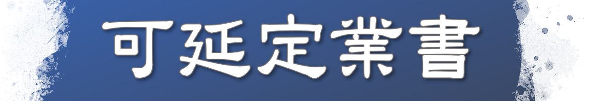

가연정업서
<가연정업서>는 대성인이 시모우사지방 가쓰시카군 와카미야에 사는 도키 조닌의 아내 도키니 부인에게 보내신 편지입니다. 지금까지 1279년에 쓰셨다고 여겼지만 최근에는 1275년에 쓰셨다는 설이 유력합니다. 도키 조닌은 일찍이 대성인 문하의 중심자로 활약해 <관심본존초> 등 중요한 어서를 많이 받았습니다. 그러한 남편을 열심히 지원한 사람이 도키니 부인인데 당시 도키니 부인은 병으로 괴로워하고 있었습니다.
이 어서의 제목에 나오는 ‘정업’은 응보의 내용이나 나타나는 시기가 정해져 있는 ‘업’을 의미합니다. 대성인은 이 어서에서 정업을 특히 ‘수명’이라는 의미로 사용하셨습니다. <가연정업서>는 정업 다시 말해 묘법으로 수명도 연장할 수 있다고 도키니 부인을 격려하신 편지입니다.
대성인은 이 어서에서 좋은 의사를 만나면 중병을 고칠 수 있듯이 위대한 묘법의 공력으로 정업을 전환해 병을 고치고 수명을 연장할 수 있다고 도키니 부인을 격려하셨습니다. 그때 아사세왕과 진신, 불경보살의 예를 들어 남성조차 법화경으로 수명을 연장했으므로 말법의 여성도 법화경을 수행해 반드시 정업을 전환할 수 있다고 말씀하셨습니다. 또 대성인이 어머니의 병이 낫기를 기원해 수명을 4년 연장한 실증을 들어 법화경의 신심을 불러 일으키도록 촉구하셨습니다. 이어서 의술이 뛰어난 문하 시조 깅고를 소개하고 깅고에게 치료를 받도록 권유하셨습니다. 그리고 목숨은 무엇과도 바꿀 수 없는 보배이고 신심의 뜻을 거듭 새겨 신속히 병을 고치라고 말씀하셨습니다. 마지막으로 대성인은 목숨은 삼천세계의 재보다 존귀하고 하루라도 살아 있다면 그만큼 공덕도 쌓을 수 있다는 점을 거듭 가르치시고 이 어서를 끝맺으셨습니다.